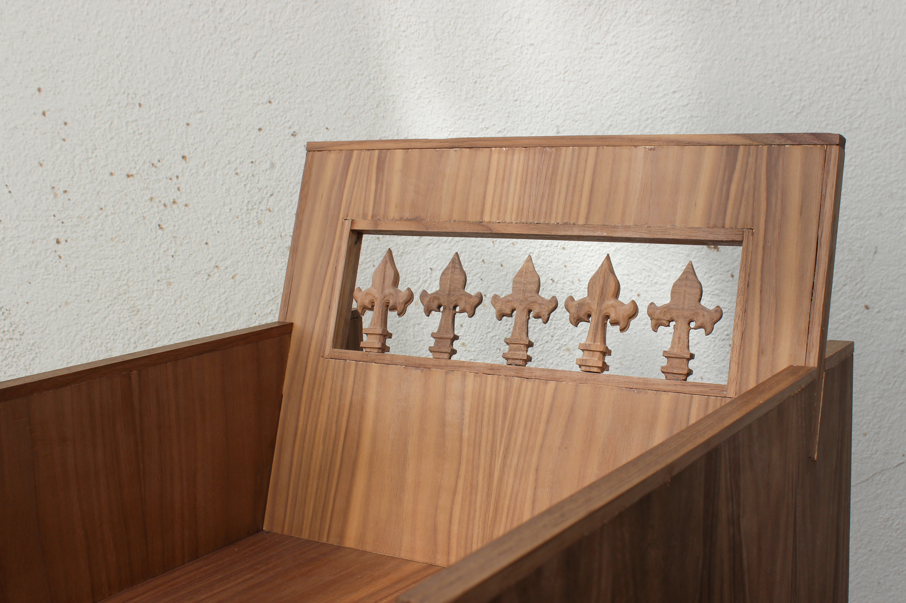
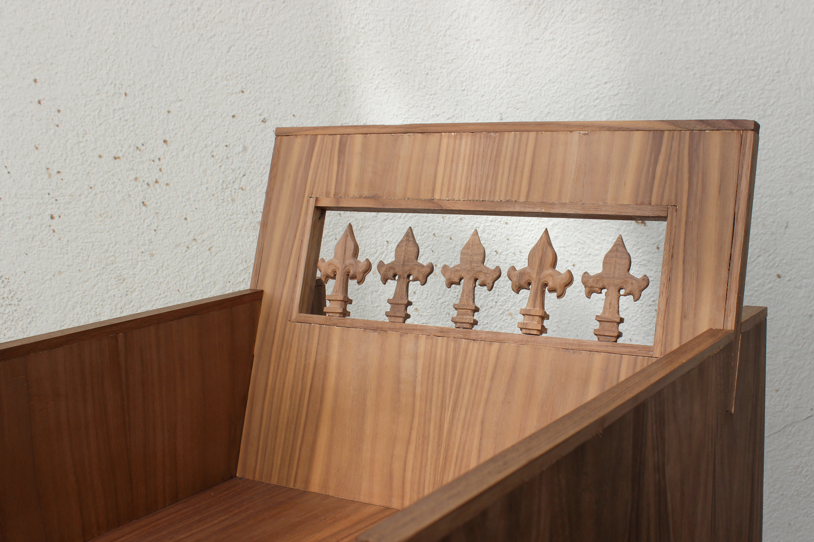
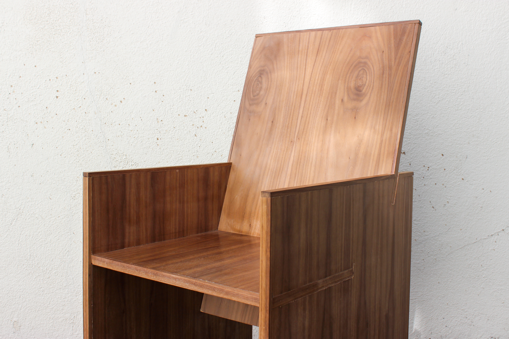
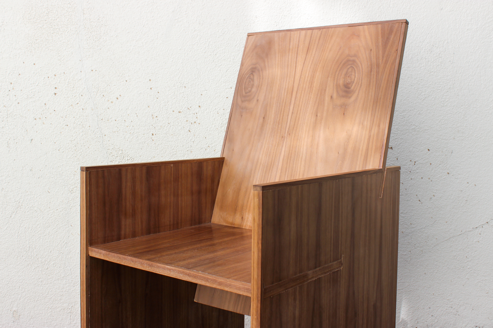

 



Three unique chairs. Combination of solid walnut and walnut plywood.
Low back: 18” x 31” x 20’ 1⁄2”
High back: 18” x 48” x 20’ 1⁄2”
These chairs represent each of my sisters and me in their uniform uniqueness. Like my sisters with genetic similarities, these chairs are carved from the same tree. They stand as tangible representations of the bond shared among my sisters, celebrating the harmonious blend of our individualities.
Designed in size for a young girl, these seats are not only physically but also conceptually created specifically for my sisters and me, capturing the essence of our shared experiences. In a departure from traditional notions where custom chairs imply hierarchy, this collection offers each of us a designated place of honor, reaffirming the importance of our individual presence within the collective tapestry of our family network.